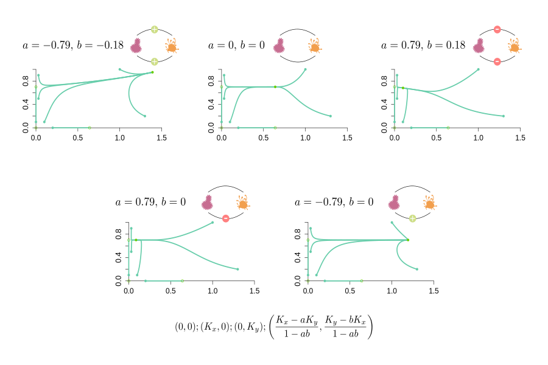

Detecting Microbial Communities
A modeling approach
Introduction
Lotka-Volterra Model
Graph Models

Lotka-Volterra Model: Example with two species

Lotka-Volterra Model: Dynamics

Materials and methods

Materials and methods

Materials and methods
Materials and methods

Materials and methods
Materials and methods

Materials and methods
Networks comparison

Networks comparison

Results: Effect of the number of samples (1)
Results: Effect of the number of samples (2)
Interpret with care networks constructed with a low number of samples
Results: Effect of the association metric and relative/absolute abundance
Signs of interactions and quantitative species abundances matter
Results: Effect of interaction structure (1)
Increasing interaction density: drop in specificity, due to indirect interactions
Barabasi-Albert (BA) model most susceptible to spurious correlations (due to hubs)
Simulations: Effect of graph model
Results: Effect of interaction structure (2)
Key network properties are reproduced by the co-occurrence network at low interaction density
Power law distribution scarcely reproduced
Network hubs are hotspot for spurious correlations
Keystone species
Keystone species are species that exert a disproportionately large effect on the ecosystem relative to their abundance.
Example: predators (control population size of the prey sizes), sulfate reducer in microbial communities
Topological patterns in the co-occurrence network due to keystone species?
Results: Identifying keystone species (1)
As keystoneness increases, keystone species have an increasing indirect deleterious effect
Signs of interactions for indirect losses are equally positive and negative
No topological property characterized the keystoneness of a species